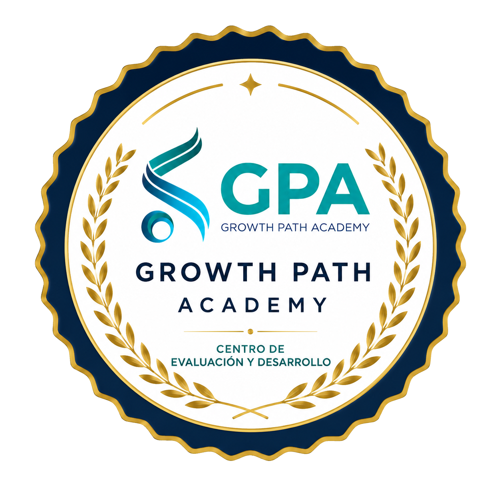

Inicio / Recursos / Autoevaluaciones
Descubre en minutos dónde estás hoy y qué fortalecer primero. Evaluaciones gratuitas para personas, líderes y organizaciones de cualquier industria, con resultado inmediato.

Elige la evaluación que corresponde a tu momento. Toma entre 5 y 10 minutos.
Ves al instante tus fortalezas y las áreas que conviene reforzar.
Te recomendamos por dónde seguir: un eBook, una mentoría o un diagnóstico más profundo.
Liderazgo y desempeño
Para quienes lideran equipos y para gerentes que quieren saber, con criterio y no con intuición, dónde actuar primero.
Descubre desde dónde estás liderando hoy, cuáles son tus fortalezas y qué te conviene desarrollar primero.
Un índice de 0 a 100 que resume el nivel de desarrollo de 13 capacidades organizacionales, ponderado por criticidad.
🎧 Especialización BPO
Basadas en La Ruta TM y La Ruta QA. Descubre si tienes el perfil antes de aplicar al cargo.
De "el mejor agente" a un líder que su equipo respeta: descubre si ya tienes el perfil de Team Manager, o qué te falta para llegar.
El QA que solo audita se queda en el formulario. Descubre si tienes el perfil para ser el que transforma la operación.
Conversemos sobre lo que encontraste y definamos juntos el siguiente paso.